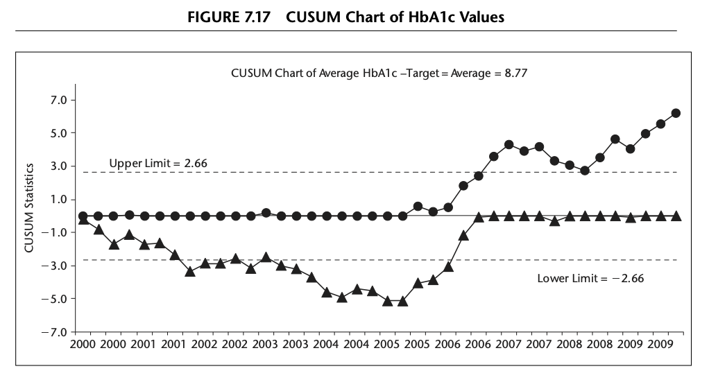
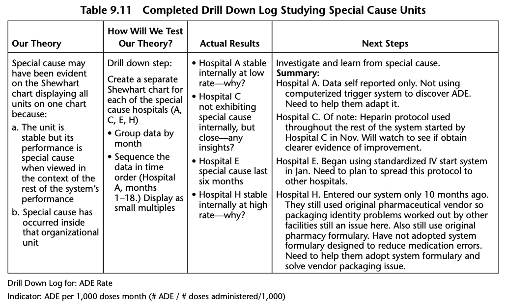

Health Care Data Guide
Chapter 1: Improvement Methodology [1]
Chapter 2: Using Data for Improvement
Chapter 3: Understanding Variation Using Run Charts
A run chart is a graphical display of data plotted in some type of order. Usually, the median is calculated and used as the chart’s centreline.
The median is required when using the probability-based rules to interpret a run chart (see below). The median is used as the centerline because (1) it provides the point at which half the observations are expected to be above and below the centerline and (2) the median is not influenced by extreme values in the data.
Four Rules to Help Interpret a Run Chart
- Shift: Six or more consecutive points either all above or all below the median.
- Trend: Five or more consecutive points all going up or all going down.
- Runs: A non-random pattern is signalled by too few or too many runs, or crossings of the median line.
- Astronomical point: Used in detecting unusually large or small numbers.
Chapter 4: Learning from Variation in Data
Using Shewhart Charts to Given Direction to an Improvement Effort
Rules for Determining a Special Cause
There is general agreement among users of Shewhart charts that a single point outside of either limit is an indication of a special cause of variation.
However there have been many suggestions for systems of rules to identify special causes that appear as nonrandom patterns within the limits. Figure 4.5 contains five rules which are recommended for general use with Shewhart charts. These rules are consistent in the sense that the chance of occurrence of Rules 2 through 5 in a stable process is approximately equal to the chance of Rule 1 occurring in a stable process. The occurrence of any one of the rules is a clear indication of the presence of a special cause.

Chapter 5: Understanding Variation Shewart Charts
Understanding process variation
Variation
The Shewhart chart provides an operational definition of the two types of causes of variation in a measure: - Common Causes : Those causes that are inherent in the system (process or product) over time, affect everyone working in the system, and affect all outcomes of the system. - Special Causes : Those causes that are not part of the system (process or product) all the time or do not affect everyone, but arise because of specific circumstances.
Shewhart Chart Selection Guide
Continuous Data
X and S Shewhart Charts When continuous data are obtained from a process, it is sometimes of interest to learn about both the average performance of the process and the variation about the average level. In these cases, a set of two Shewhart charts are often used to study the process: the X chart and the S chart. The X chart contains the averages of each subgroup and the S chart the spread (standard deviation) between the measurements within each subgroup.
Figure 5.7: Example of X and S Chart
The P Chart for Classification Data
The P chart is appropriate whenever the data are based on classifications made in two categories, for example patients who were either harmed during their hospitalization or not harmed during their hospitalization. Table 5.6 gives some examples where a P chart could be used. The P chart limits are based on a binomial distribution of the data.
C and U Charts for Counts of Nonconformities
When actual counts of incidents (called nonconformities) rather than classification of units are made, either a C chart or a U chart is usually the appropriate Shewhart chart. C and U charts limits are based on the Poisson distribution. Table 5.4 outlined the difference between count and classification data.
To decide whether to use a C chart or a U chart, determine whether the area of opportunity will be constant or will vary for each subgroup of counts.
Table 5.12 lists examples of applications of C and U charts.
Table 5.4 Summarizes the Differences between P, C and U Charts
Chapter 6: Shewart Chart Savvy: Dealing with Some Issues
Common Issues with Statistical Control Charts
- Uncertainty as to which chart to use
- Uncommon outcomes
- Large seasonal variations
- Limited baseline data
Chapter 7: More Shewart-Type Charts
Rare Events (T and G Charts)
Cumulative Sum (CUSUM) Chart
The CUSUM chart plots the cumulative sums (CUSUMs) of the deviations of each sample value from the target value. Because the CUSUM chart is cumulative, even minor drifting in the process mean will cause steadily increasing (or decreasing) cumulative deviation values. - Detects small changes sooner than standard Shewhart charts - Lacks clear interpretability. - Designed to be one-sided, testing either for a shift towards a specified “poor performance” rate or an “improvement rate”

Funnel Charts
Funnel plots discourage inappropriate ranking while providing a strong visual indication of “divergent” performance or “special cause” variation. Advantages include the display of the observed event rates, an informal check of the relationship between event rate and volume of cases, and an emphasis on the increased variability expected from smaller centres Suggested by Spiegelhalter in a number of publications.
Chapter 8: Special Uses for Shewart Charts
Chapter 9: Drilling Down into Aggregate Data for Improvement
The Drill Down Pathway includes the following basic steps:
- Identify the aggregate measure of interest
- Clarify the measure
- Create a Shewhart chart for the measure at the aggregate level
- Drill down into the measure:
** By organizational unit (placing all units on the same Shewhart chart)
** By placing each unit on its own Shewhart chart
- Use rational subgrouping with Shewhart charts to learn more about the causal system for this measure
- Use SPC tools to learn from the data and then use PDSA cycles to test ideas for improvement
- Use PDSA cycles to implement successful changes

Chapter 10: Learning from Individual Patient Data
Chapter 11: Learning from Patient Feedback to Improve Care
Chapter 12: Using Shewhart Charts in Health Care Leadership
Developing a Vector of Measures
The usefulness of Shewhart charts extends beyond the improvement project level and into the realm of senior leadership. Creating a vector of measures and displaying them each on Shewhart charts enhances senior leadership’s ability to manage, lead, and improve the entire system for which they are responsible.
A vector of measures is a set of key organizational measures that, although inadequate as individual measures to describe the system, together are very useful to senior leaders to learn about, manage, and improve their system. Each measure in the vector should be displayed on the appropriate Shewhart chart or, if more appropriate, on a run chart. Each measure in the vector should be updated monthly in order to learn about system performance in a timely fashion.
Chapter 13: Case Studies Using Shewhart Charts
Appendix: Shewhart Chart Selection Guide
Statistical Software
Excel
QIMacros QI Macros Excel add-on
Stata
Basic functionality found in base Stata. Barbara Williams, 2015. “Statistical Process Control Charts,” 2015 Stata Conference 7, Stata Users Group
R
qccFirst package for SPC Charts in R. Includes implementations of EWMA. Rnews articles covers basic functionalityqicharts2spccumsumcusum: Cumulative Sum (CUSUM) Charts for Monitoring of Hospital PerformanceNHSRplotthedotsBuilt by the [NHS-R community][https://nhsrcommunity.com/] to provide tools for drawing statistical process control (SPC) charts. This package supports the NHSE/I programme [‘Making Data Count’][https://www.england.nhs.uk/publication/making-data-count/], and allows users to draw XmR charts, use change points, and apply rules with summary indicators for when rules are breached.FunnelPlotRAn implementation of the funnel plot processes, and overdispersion methods described in:
–Statistical methods for healthcare regulation: rating, screening and surveillance. Spiegelhalter et al (2012)
– Funnel plots for comparing institutional performance. Spiegelhalter (2005)
– Handling over-dispersion of performance indicators. Spiegelhalter (2005)
– Github site